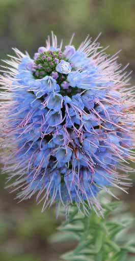

Our Company
Driving sustainable biorefinery innovation and biomass valorization since 2011.
The Biorefinery Mission
At MadeBiotech, our core mission is to research, develop, and promote the concept of Sustainable Biorefinery across diverse types of biomass feedstock.
We believe that standard oil-derivatives and toxic synthetic chemicals can be effectively replaced with premium, economically viable, and environmentally friendly alternatives when using correct biotechnology processes.


Strategic Innovation for SMEs
Alongside our internal research pathways, we partner directly with SMEs to design, test, and implement advanced biotechnology workflows.
Our infrastructure allows small and medium enterprises to access top-tier scientific equipment and expertise without the associated massive capital investment requirements.
Facts & Figures
Key indicators driving MadeBiotech's R&D center, industrial capacities, and strategic global location.
Download Our Corporate Brochure
Get full insights into MadeBiotech's biorefinery facilities, scientific services, and R&D methodology.
Download Brochure (PDF) →